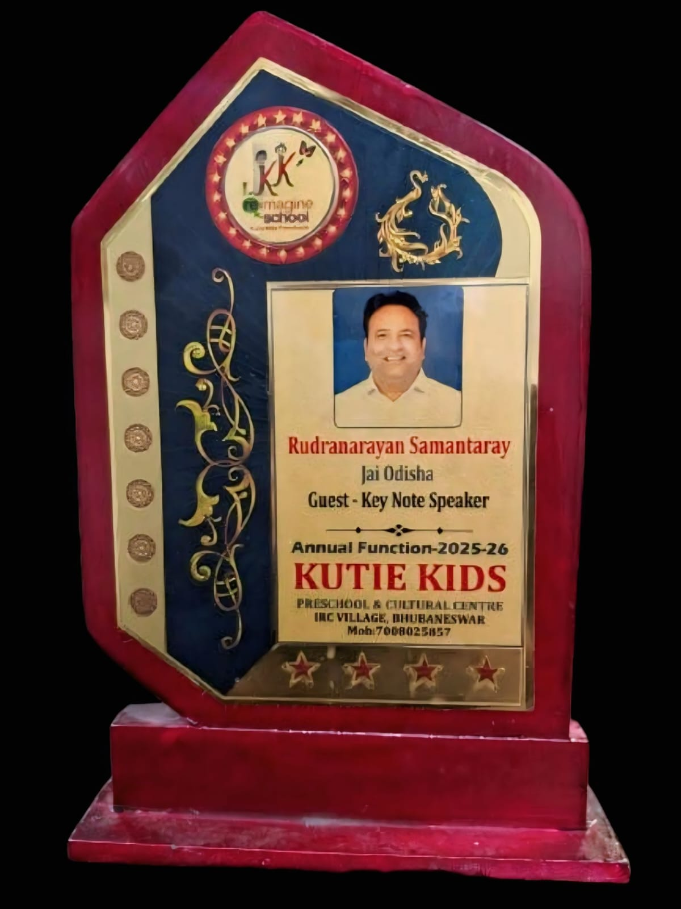
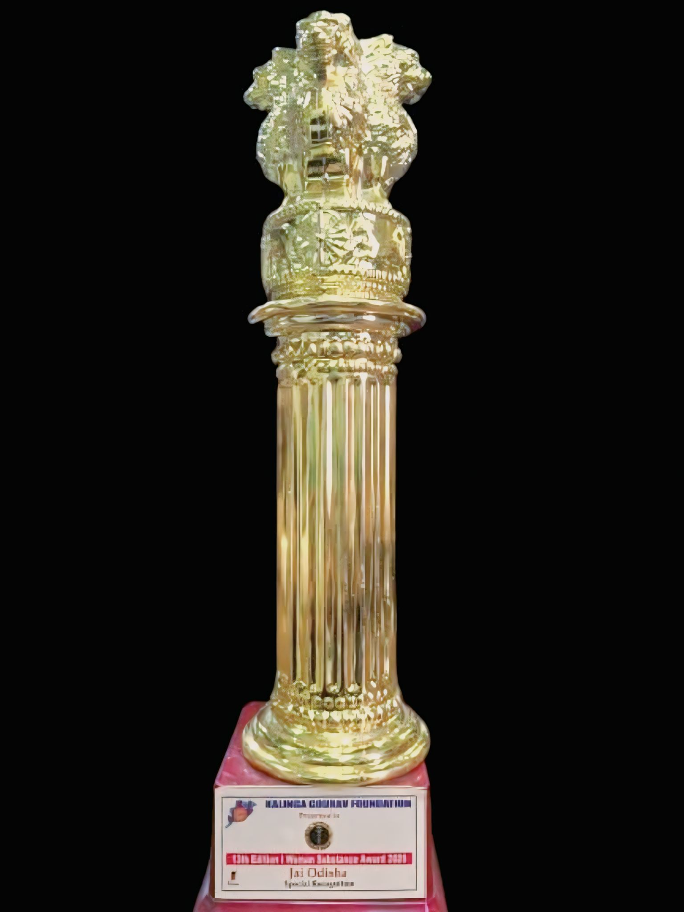
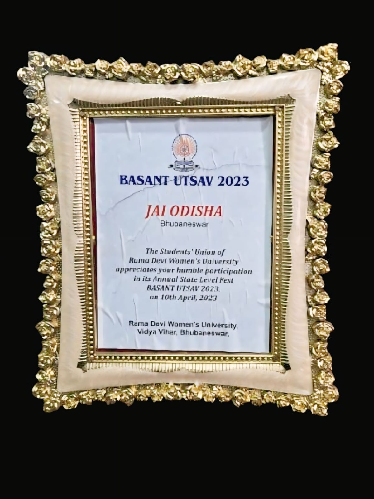
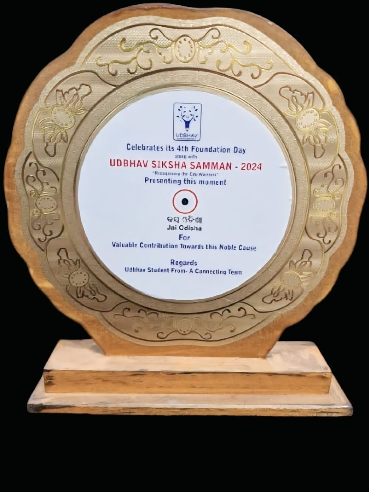
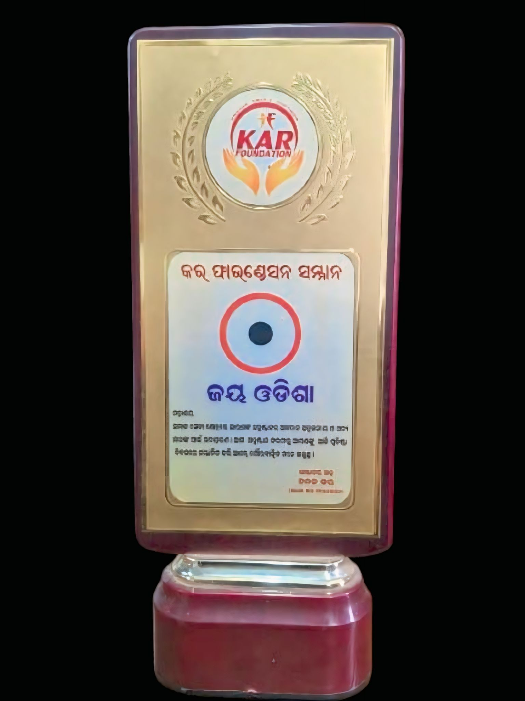

The Founder & President of Jai Odisha is a passionate social worker and visionary leader dedicated to the welfare and development of society. With the mission of empowering communities and creating positive social change, he established Jai Odisha to support education, youth empowerment, environmental awareness, and humanitarian activities across Odisha.
Under his leadership, the organization continues to inspire people through various social service programs, awareness campaigns, and community development initiatives. His dedication, hard work, and commitment towards helping others motivate the younger generation to contribute towards building a better and stronger Odisha.
To empower communities through education, healthcare, and social support initiatives.
To create an equal and inclusive society where everyone gets opportunities to succeed.
Humanity, equality, transparency, compassion, and community development.

Founder & President Mr. Rudranarayan Samantaray was honored as a Guest and Keynote Speaker for his inspiring leadership and social contributions.

Received Special Recognition from Kalinga Gourav Foundation for dedicated social service and community development efforts. This award celebrates the organization's positive contribution to society.

Recognized by Rama Devi Women's University for valuable participation in Basant Utsav 2023. The award highlights Jai Odisha's support for educational and cultural initiatives.

Awarded UDBHAV Siksha Samman 2024 for promoting education, social awareness, and community empowerment through impactful initiatives.

Honored by KAR Foundation for outstanding contribution to social welfare and community service. This recognition reflects Jai Odisha's commitment to creating positive social impact.